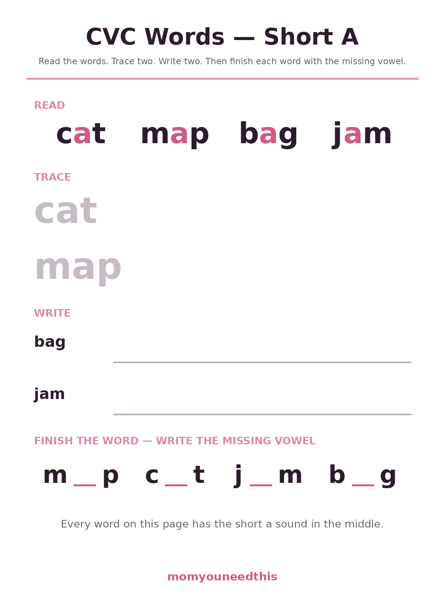
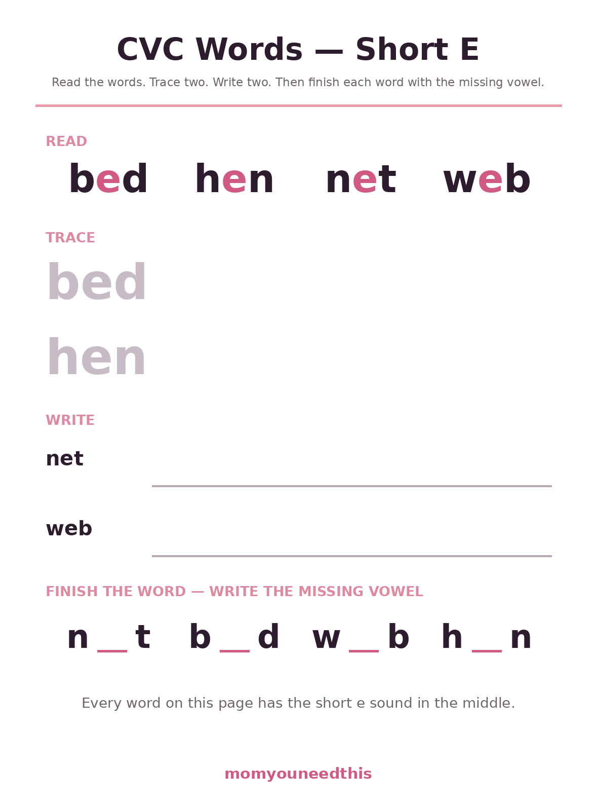
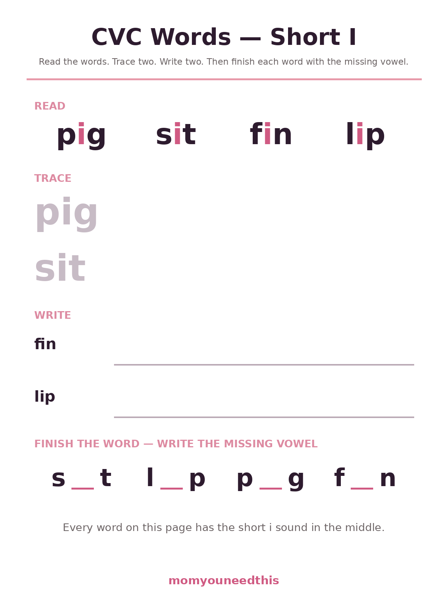
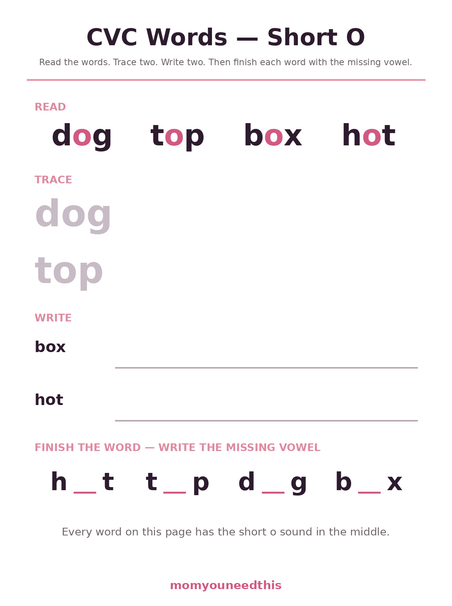
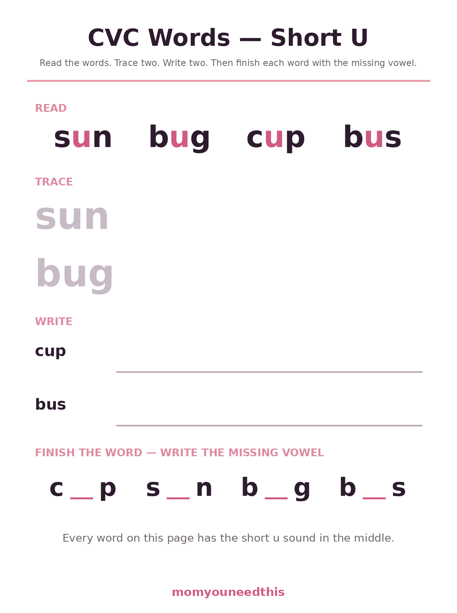

CVC Word Worksheets Twenty Short Vowel Words to Read, Trace, Write & Complete
CVC word worksheets practice the simplest words in English — consonant, vowel, consonant — like cat, bed, pig, dog and sun. These five free sheets group twenty words by their short vowel sound for ages 5 to 7: read each word, trace two, write two, then finish each word by filling in its missing vowel. Print at home, no signup.
Last updated: October 21, 2026
Quick Answer
A CVC word is a three-letter word built consonant–vowel–consonant — cat, hen, pig, top, bus. This set has five free sheets, one per short vowel (a, e, i, o, u), with four words on each — 20 words in all. Every sheet follows the same routine: read the four words, trace two in light gray, write two on blank lines, then complete all four by writing in the missing middle vowel. Made for ages 5 to 7, kindergarten and grade 1.
At a Glance
- Skill: Decoding CVC words & short vowels
- Ages: 5–7 (kindergarten–grade 1)
- Sheets: 5 (short a, e, i, o, u)
- Words: 20 — four per sheet
- Routine: Read, trace, write, fill the vowel
- Cost: Free — print at home
🍎 Short A and Short E Sheets
The Short A sheet holds four of the friendliest first words in English — cat, map, bag, jam — and the Short E sheet answers with bed, hen, net, web. Each sheet follows the same four-step routine, and the routine is the point: read the four words with the vowel picked out in pink, trace two of them in light gray, write two on blank lines, then finish all four words in the last row by writing in the vowel that is missing. That last row is where decoding turns into spelling — the child has to hear the middle sound and choose its letter, which is a genuinely different skill from copying.

🍎 Download Your Free Short A Worksheet
Short A words: cat, map, bag, jam — read, trace, write, then fill in the missing vowel.
⬇️ Download Free Worksheet 🖨️ Print🎁 Free printable for ages 5–7

🍎 Download Your Free Short E Worksheet
Short E words: bed, hen, net, web — read, trace, write, then fill in the missing vowel.
⬇️ Download Free Worksheet 🖨️ Print🎁 Free printable for ages 5–7
🍊 Short I, Short O and Short U Sheets
Short I (pig, sit, fin, lip) is the sheet to slow down for: many children hear short i and short e as nearly the same sound at first, and untangling them takes a few rounds across different days. Short O (dog, top, box, hot) and Short U (sun, bug, cup, bus) are usually calmer waters — sun and bus are words children love to spot in the wild. Because all five sheets share one format, a child who has done Short A already knows how Short U works before it comes out of the printer, and that independence is worth protecting: resist the urge to explain the sheet again. Just hand over the pencil.

🐷 Download Your Free Short I Worksheet
Short I words: pig, sit, fin, lip — read, trace, write, then fill in the missing vowel.
⬇️ Download Free Worksheet 🖨️ Print🎁 Free printable for ages 5–7

🐶 Download Your Free Short O Worksheet
Short O words: dog, top, box, hot — read, trace, write, then fill in the missing vowel.
⬇️ Download Free Worksheet 🖨️ Print🎁 Free printable for ages 5–7

☀️ Download Your Free Short U Worksheet
Short U words: sun, bug, cup, bus — read, trace, write, then fill in the missing vowel.
⬇️ Download Free Worksheet 🖨️ Print🎁 Free printable for ages 5–7
🌱 Why CVC Words Come First
Nearly every reading program on earth starts in the same place, and it is not an accident. CVC words are the smallest complete unit of English reading: one consonant to start, one vowel in the middle, one consonant to close. Every letter does its most predictable job, so a child who knows the letter sounds owns everything needed to read the word — nothing has to be memorized or guessed from a picture. That reliability is what makes blending teachable. When a child stretches c-a-t and hears 'cat' snap together, they have proof that print is a code they can crack, and that proof carries them through the harder patterns — blends, silent e, vowel teams — that all build on this one. Just as important, CVC words are everywhere in the little books this age group reads: dog, pig, sun, bus and cat turn up on page after page, so practice on these sheets pays off in storybooks within days, where the child can feel it.
👂 Stretch It Out, Then Snap It Together
The most useful thing a parent can do during these sheets costs nothing: make the sounds continuous. Letter-by-letter reading often stalls because children say three clipped sounds — cuh, a, tuh — and then cannot hear the word hiding inside them. Stretching fixes that. Model it once with your own voice: sssuuunnn, long and smooth, then repeat it quicker until it becomes 'sun'. Most children find this genuinely funny, which helps — laughter and learning are frequent partners at this age. The second trick lives in the FINISH THE WORD row: when a child hesitates over the blank, ask 'what sound is missing?' rather than 'what letter goes there?' Ears answer the first question much faster than eyes answer the second. And if a word will not come at all, point back to the READ row without a hint of disappointment. Looking back is what real readers do with hard words; the sheet is quietly teaching that too.
🖨️ How to Use These Worksheets
- One vowel at a time. Print just the sheet for the vowel your child is working on. Five sheets in one sitting is a marathon; one sheet done slowly is a lesson.
- Stretch, then snap. For each READ word, stretch the sounds out together — sssuuun — then say the word fast: sun. The trace and write rows then ask the hand to do what the ear just did.
- Cover the answer for the last row. The FINISH THE WORD row leaves each vowel blank. If your child is stuck, let them look back at the READ row — checking is a strategy, not cheating.
- Pair it with families. Short a words appear on both this page and the word families page — printing the -at sheet beside the Short A sheet shows your child the same words doing two different jobs.
📚 More Reading for Moms & Kids
🧒 Older Kids
Every worksheet in the Older Kids section, in one hub. Browse Older Kids.
🔤 Word Families
Six families to read, trace, write and sort — the natural next step after CVC words. Try word families.
🔊 Phonics Worksheets
Beginning sounds, ending sounds, blends and vowels — listening-first practice. Try phonics sheets.
👀 Sight Words
Flashcards and word lists for the words that cannot be sounded out. See the flashcards.
✏️ Sight Word Practice Pages
Read, trace and write sheets for all 92 Dolch words. Practice sight words.
✍️ Cursive Worksheets
The alphabet chart and per-letter sheets for joined-up writing. See cursive.
❓ CVC Word Worksheets FAQ
What is a CVC word?
A CVC word is a three-letter word built consonant–vowel–consonant: cat, bed, pig, dog, sun. They are the first words most children learn to read by sounding out, because every letter makes its simplest sound — no silent letters, no teams, no surprises. If a child can read CVC words, real reading has started.
Which short vowel should we start with?
Short a is the traditional starting point, and the Short A sheet (cat, map, bag, jam) is where most families begin. Short e often comes next, though many children confuse e and i sounds for a while — that mix-up is normal, and the separate Short E and Short I sheets exist so the two sounds get their own day rather than a muddled one.
My child says c-a-t but cannot blend it into 'cat'. What helps?
Blending is a separate skill from knowing the sounds, and it clicks at different times for different children. Try continuous blending: instead of three separate sounds, sing them into each other — caaat, stretched like a rubber band, then faster and faster until it snaps into cat. The tracing rows help too, because the hand moves through the letters in order while the voice stretches.
Are these cvc worksheets free?
Yes — all five sheets are free to print at home, as often as you like, with no signup and no email. Reprinting the same sheet a week later is a feature, not a shortcut: the second pass is where the fluency shows.
Which sheet is best for the short i sound?
The Short I sheet — pig, sit, fin and lip, with the FINISH THE WORD row leaving the i blank in s_t, l_p, p_g and f_n. Parents who search for cvc i worksheets are usually after exactly this set, because short i is the sound children most often swap with short e.